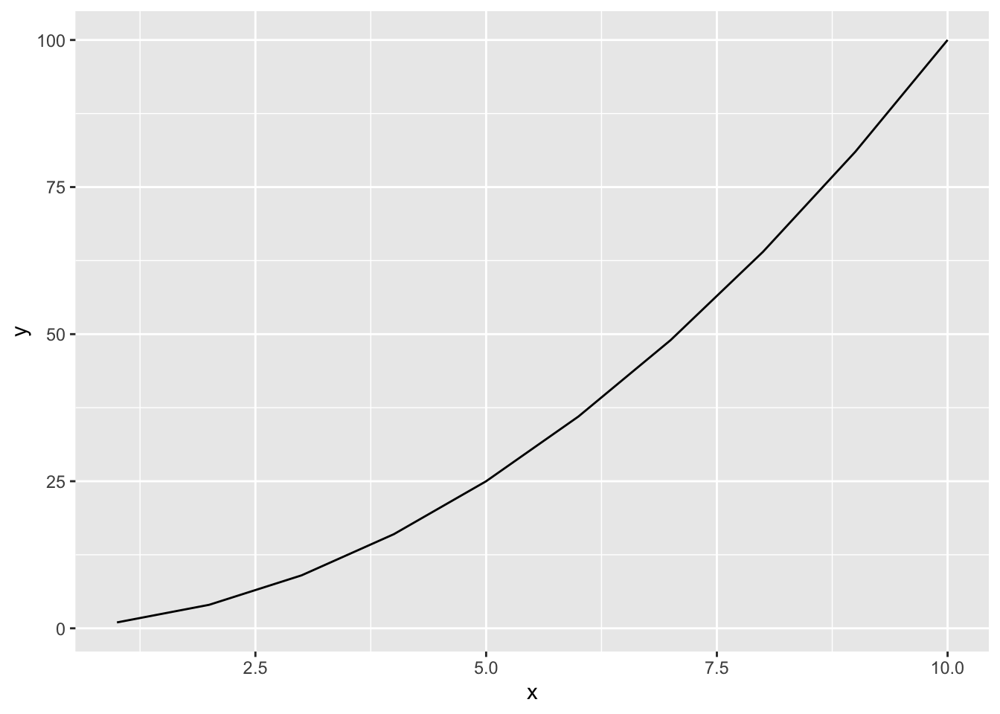
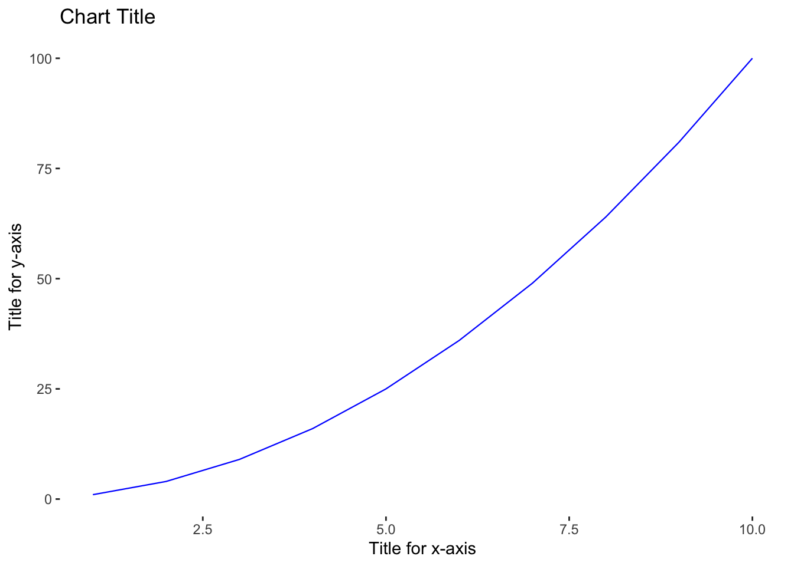

2 Introduction to R
This chapter covers how to install R, R Studio, and required packages for replicating examples in this book. This chapter also covers R basics such as objects, data structures, and data types that are fundamental to working in R. In addition, many common functions will be covered in this chapter, and many more will be introduced throughout later chapters.
2.1 Getting Started
This section will cover some fundamental concepts and best practices for working in R.
2.1.1 Installing R
R can be compiled and ran on a variety of platforms including UNIX, Windows, and MacOS. R can be downloaded here: https://www.r-project.org/
When installing R, you will need to select a CRAN mirror. The Comprehensive R Archive Network (CRAN) is a network of servers around the world that store identical, current versions of code and documentation for R. You should select the CRAN mirror nearest you to minimize network load.
2.1.2 Installing R Studio
R Studio, which is being rebranded Posit to reflect the scientific research it endeavors to support (i.e., testing posited hypotheses), is an Integrated Development Environment (IDE) for R. This IDE provides a console with syntax editing that is helpful for debugging code as well as tools for plotting, history, and workspace management. Both open source and commercial editions are available, but the open-source option is sufficient for replicating everything in this book.
R Studio can be downloaded here: https://www.rstudio.com/products/rstudio/download/#download
2.1.3 Installing Packages
This book will utilize libraries from many R packages. The line of code below can be executed within either the R console or IDE to install all at once:
install.packages(c("tidyverse", "corrplot", "psych", "moments", "ggpubr", "ggdist", "GGally", "networkD3", "sqldf", "caret", "car", "reshape2", "lmtest", "equatiomatic", "pwr", "nnet", "MASS", "brant", "lme4", "lmerTest", "rpart", "rpart.plot", "lavaan", "lavaanPlot", "factoextra", "cluster"), dependencies = TRUE, repos = "http://cran.us.r-project.org")2.1.4 Case Sensitivity
It’s important to note that everything in R is case-sensitive. When working with functions, be sure to match the case when typing the function name. For example, Mean() is not the same as mean(); since mean() is the correct case for the function, capitalized characters will result in an error when executing the function.
2.1.5 Help
Documentation for functions is available via the ? command. This can be inserted prior to any function to access the function’s documentation. For example, ?mean will display the documentation, including its required and optional arguments, for the mean() function as shown in Figure 2.1.

Figure 2.1: R documentation for arithmetic mean function
2.1.6 Objects
Objects underpin just about everything we do in R. An object is a container for various types of data. Objects can take many forms, ranging from simple objects holding a single number or character to complex structures that support advanced visualizations. The assignment operator <- is used to assign values to an object, though = serves the same function.
Let’s use the assignment operator to assign a number and character to separate objects. Note that non-numeric values must be enveloped in either single ticks '' or double quotes "":
obj_1 <- 1
obj_1## [1] 1obj_2 <- 'a'
obj_2## [1] "a"Several functions are available for returning the type of data in an object, such as typeof() and class():
typeof(obj_2)## [1] "character"class(obj_2)## [1] "character"2.2 Vectors
A vector is the most basic data object in R. Vectors contain a collection of data elements of the same data type, which we will denote as \(x_1, x_2, ..., x_n\) in this book, where \(n\) is the number of observations or length of the vector. A vector may contain a series of numbers, set of characters, collection of dates, or logical TRUE or FALSE results.
In this example, we introduce the combine function c(), which allows us to fill an object with more than one value:
# Create and fill a numeric vector named vect_num
vect_num <- c(2,4,6,8,10)
vect_num## [1] 2 4 6 8 10# Create and fill a character vector named vect_char
vect_char <- c('a','b','c')
vect_char## [1] "a" "b" "c"We can use the as.Date() function to convert character strings containing dates to an actual date data type. By default, anything within single ticks or double quotes is treated as a character, so we must make an explicit type conversion from characters to dates. Remember that R is case-sensitive. Therefore, as.date() is not a valid function; the D must be capitalized.
# Create and fill a date vector named vect_dt
vect_dt <- c(as.Date("2021-01-01"), as.Date("2022-01-01"))
vect_dt## [1] "2021-01-01" "2022-01-01"We can use the sequence generation function seq() to fill values between a start and end point using a specified interval. For example, we can fill vect_dt with the first day of each month between 2021-01-01 and 2022-01-01 via the seq() function and its by = "months" argument:
# Create and fill a date vector named vect_dt
vect_dt <- seq(as.Date("2021-01-01"), as.Date("2022-01-01"), by = 'months')
vect_dt## [1] "2021-01-01" "2021-02-01" "2021-03-01" "2021-04-01" "2021-05-01"
## [6] "2021-06-01" "2021-07-01" "2021-08-01" "2021-09-01" "2021-10-01"
## [11] "2021-11-01" "2021-12-01" "2022-01-01"We can also use the : operator to fill integers between a starting and ending number:
# Create and fill a numeric vector with values between 1 and 10
vect_num <- 1:10
vect_num## [1] 1 2 3 4 5 6 7 8 9 10We can access a particular element of a vector using its index. An index represents the position in a set of elements. In R, the first element of a vector has an index of 1, and the final element of a vector has an index equal to the vector’s length. The index is specified using square brackets, such as [5] for the fifth element of a vector.
# Return the value in position 5 of vect_num
vect_num[5]## [1] 5When applied to a vector, the length() function returns the number of elements in the vector, and this can be used to dynamically return the last value of vectors.
# Return the last element of vect_num
vect_num[length(vect_num)]## [1] 10Vectorized Operations
Vectorized operations (or vectorization) underpin mathematical operations in R and greatly simplify computation. For example, if we need to perform a mathematical operation to each data element in a numeric vector, we do not need to specify each and every element explicitly. We can simply apply the operation at the vector level, and the operation will be applied to each of the vector’s individual elements.
# Create a numeric vector named x and fill with values between 1 and 10
x <- 1:10# Add 2 to each element of x
x_plus2 <- x+2
x_plus2## [1] 3 4 5 6 7 8 9 10 11 12# Multiply each element of x by 2
x_times2 <- x*2
x_times2## [1] 2 4 6 8 10 12 14 16 18 20# Square each element of x
x_sq <- x^2
x_sq## [1] 1 4 9 16 25 36 49 64 81 100Many built-in arithmetic functions are available and compatible with vectors:
# Aggregate sum of x elements
sum(x)## [1] 55# Count of x elements
length(x)## [1] 10# Square root of x elements
sqrt(x)## [1] 1.000000 1.414214 1.732051 2.000000 2.236068 2.449490 2.645751 2.828427
## [9] 3.000000 3.162278# Natural logarithm of x elements
log(x)## [1] 0.0000000 0.6931472 1.0986123 1.3862944 1.6094379 1.7917595 1.9459101
## [8] 2.0794415 2.1972246 2.3025851# Exponential of x elements
exp(x)## [1] 2.718282 7.389056 20.085537 54.598150 148.413159
## [6] 403.428793 1096.633158 2980.957987 8103.083928 22026.465795We can also perform various operations on multiple vectors. Vectorization will result in an implied ordering of elements, in that the specified operation will be applied to the first elements of the vectors and then the second, then third, etc.
# Create vectors x1 and x2 and fill with integers
x1 <- 1:10
x2 <- 11:20
# Store sum of vectors to new x3 vector
x3 <- x1 + x2
x3## [1] 12 14 16 18 20 22 24 26 28 30Using vectorization, we can also evaluate whether a specified condition is true or false for each element in a vector:
# Evaluate whether each element of x is less than 6, and store results to a logical vector
logical_rslts <- x<6
logical_rslts## [1] TRUE TRUE TRUE TRUE TRUE FALSE FALSE FALSE FALSE FALSE2.3 Matrices
A matrix is like a vector in that it represents a collection of data elements of the same data type; however, the elements of a matrix are arranged into a fixed number of rows and columns.
We can create a matrix using the matrix() function. Per ?matrix, the nrow and ncol arguments can be used to organize like data elements into a specified number of rows and columns.
# Create and fill matrix with numbers
mtrx_num <- matrix(data = 1:10, nrow = 5, ncol = 2)
mtrx_num## [,1] [,2]
## [1,] 1 6
## [2,] 2 7
## [3,] 3 8
## [4,] 4 9
## [5,] 5 10We can leverage shorthand for function calls. As long as the argument values are in the correct order per the documentation, the argument names are not required. Per ?matrix, the first argument is data, followed by nrow and then ncol. Therefore, we can achieve the same result using the following:
# Create and fill matrix with numbers
mtrx_num <- matrix(1:10, 5, 2)
mtrx_num## [,1] [,2]
## [1,] 1 6
## [2,] 2 7
## [3,] 3 8
## [4,] 4 9
## [5,] 5 10Several functions are available to quickly retrieve the number of rows and columns in a rectangular object like a matrix:
# Return the number of rows in mtrx_num
nrow(mtrx_num)## [1] 5# Return the number of columns in mtrx_num
ncol(mtrx_num)## [1] 2# Return the number of columns and rows in mtrx_num
dim(mtrx_num)## [1] 5 2The head() and tail() functions return the first and last pieces of data, respectively. For large matrices (or other types of objects), this can be helpful for previewing the data:
# Return the first five rows of a matrix containing 1,000 rows and 10 columns
head(matrix(1:10000, 1000, 10), 5)## [,1] [,2] [,3] [,4] [,5] [,6] [,7] [,8] [,9] [,10]
## [1,] 1 1001 2001 3001 4001 5001 6001 7001 8001 9001
## [2,] 2 1002 2002 3002 4002 5002 6002 7002 8002 9002
## [3,] 3 1003 2003 3003 4003 5003 6003 7003 8003 9003
## [4,] 4 1004 2004 3004 4004 5004 6004 7004 8004 9004
## [5,] 5 1005 2005 3005 4005 5005 6005 7005 8005 9005# Return the last five rows of a matrix containing 1,000 rows and 10 columns
tail(matrix(1:10000, 1000, 10), 5)## [,1] [,2] [,3] [,4] [,5] [,6] [,7] [,8] [,9] [,10]
## [996,] 996 1996 2996 3996 4996 5996 6996 7996 8996 9996
## [997,] 997 1997 2997 3997 4997 5997 6997 7997 8997 9997
## [998,] 998 1998 2998 3998 4998 5998 6998 7998 8998 9998
## [999,] 999 1999 2999 3999 4999 5999 6999 7999 8999 9999
## [1000,] 1000 2000 3000 4000 5000 6000 7000 8000 9000 10000Using vectorization, we can easily perform matrix multiplication.
# Create 3x3 matrix
matrix(1:9, 3, 3)## [,1] [,2] [,3]
## [1,] 1 4 7
## [2,] 2 5 8
## [3,] 3 6 9# Multiply each matrix value by 2
matrix(1:9, 3, 3) * 2## [,1] [,2] [,3]
## [1,] 2 8 14
## [2,] 4 10 16
## [3,] 6 12 182.4 Factors
A factor is a data structure containing a finite number of categorical values. Each categorical value of a factor is known as a level, and the levels can be either ordered or unordered. This data structure is a requirement for several statistical models we will cover in later chapters.
We can create a factor using the factor() function:
# Create and fill factor with unordered categories
education <- factor(c("undergraduate", "post-graduate", "graduate"))
education## [1] undergraduate post-graduate graduate
## Levels: graduate post-graduate undergraduateSince education has an inherent ordering, we can use the ordered and levels arguments of the factor() function to order the categories:
# Create and fill factor with unordered categories
education <- factor(education, ordered = TRUE, levels = c("undergraduate", "graduate", "post-graduate"))
education## [1] undergraduate post-graduate graduate
## Levels: undergraduate < graduate < post-graduateThe ordering of factors is critical to a correct interpretation of statistical model output as we will cover later.
2.5 Data Frames
A data frame is like a matrix in that it organizes elements within rows and columns but unlike matrices, data frames can store multiple types of data. Data frames are often the most appropriate data structures for the data required in people analytics.
A data frame can be created using the data.frame() function:
# Create three vectors containing integers (x), characters (y), and dates (z)
x <- 1:10
y <- c('a','b','c','d','e','f','g','h','i','j')
z <- seq(as.Date("2021-01-01"), as.Date("2021-10-01"), by = 'months')
# Create a data frame with 3 columns (vectors x, y, and z) and 10 rows
df <- data.frame(x, y, z)
df## x y z
## 1 1 a 2021-01-01
## 2 2 b 2021-02-01
## 3 3 c 2021-03-01
## 4 4 d 2021-04-01
## 5 5 e 2021-05-01
## 6 6 f 2021-06-01
## 7 7 g 2021-07-01
## 8 8 h 2021-08-01
## 9 9 i 2021-09-01
## 10 10 j 2021-10-01The structure of an object can be viewed using the str() function:
# Describe the structure of df
str(df)## 'data.frame': 10 obs. of 3 variables:
## $ x: int 1 2 3 4 5 6 7 8 9 10
## $ y: chr "a" "b" "c" "d" ...
## $ z: Date, format: "2021-01-01" "2021-02-01" ...Specific columns in the data frame can be referenced using the infix operator $ between the data frame and column names:
# Return data in column x in df
df$x## [1] 1 2 3 4 5 6 7 8 9 10Another method that allows for efficient subsetting of rows and/or columns is the subset() function. The example below illustrates how to subset df using conditions on x and y while only displaying z in the output. The logical operator | is used for OR conditions, while & is the logical operator for AND conditions:
# Return z values for rows where x is at least 7 OR y is a, b, or c.
subset(df, x >= 7 | y == c('a','b','c'), select = z)## z
## 1 2021-01-01
## 2 2021-02-01
## 3 2021-03-01
## 7 2021-07-01
## 8 2021-08-01
## 9 2021-09-01
## 10 2021-10-012.6 Lists
Lists are versatile objects that can contain elements with different types and lengths. The elements of a list can be vectors, matrices, data frames, functions, or even other lists.
A list can be created using the list() function:
# Store vectors x, y, and z as well as df to a list
lst <- list(x, y, z, df)
str(lst)## List of 4
## $ : int [1:10] 1 2 3 4 5 6 7 8 9 10
## $ : chr [1:10] "a" "b" "c" "d" ...
## $ : Date[1:10], format: "2021-01-01" "2021-02-01" ...
## $ :'data.frame': 10 obs. of 3 variables:
## ..$ x: int [1:10] 1 2 3 4 5 6 7 8 9 10
## ..$ y: chr [1:10] "a" "b" "c" "d" ...
## ..$ z: Date[1:10], format: "2021-01-01" "2021-02-01" ...Unlike vectors, accessing elements of a list requires double brackets, such as [[3]] for the third element.
# Return data from the third element of lst
lst[[3]]## [1] "2021-01-01" "2021-02-01" "2021-03-01" "2021-04-01" "2021-05-01"
## [6] "2021-06-01" "2021-07-01" "2021-08-01" "2021-09-01" "2021-10-01"2.7 Loops
In many cases, the need arises to perform an operation a variable number of times. Loops are available to avoid the cumbersome task of writing the same statement many times. The two most common types of loops are while and for loops.
Let’s use a while loop to square integers between 1 and 5:
# Initialize variable
i <- 1
# Using a 'while' loop, square the values 1 through 5 and print results to the screen
# 'i' is a variable that takes on a value between 1 and 5 for the respective loop
while (i < 6) {
print(i^2)
i <- i + 1 # increment i by 1
}## [1] 1
## [1] 4
## [1] 9
## [1] 16
## [1] 25With a while loop, we needed to initialize the variable i as well as increment it by 1 within the loop. With a for loop, we can accomplish the same goal with less code:
# Using a 'for' loop, square the values 1 through 5 and print results to the screen
for (i in 1:5) {
print(i^2)
}## [1] 1
## [1] 4
## [1] 9
## [1] 16
## [1] 252.8 User-Defined Functions (UDFs)
Though many built-in functions are available, R provides the flexibility to create our own.
Functions can be an effective alternative to loops. For example, here is a basic function that achieves the same goal as our while and for loop examples (i.e., squaring integers 1 through 5):
# Create a function named square.val() with one argument (x) that squares given x values
square.val <- function(x) {
x^2
}
# Pass integers 1 through 5 into the new square.val() function and display results
square.val(1:5)## [1] 1 4 9 16 25While many projects warrant UDFs and/or loops, we do not actually need either to square a set of integers thanks to vectorization. As you gain experience writing R code, you will naturally discover ways to write more performant and terse code:
# Square integers
(1:5)^2## [1] 1 4 9 16 252.9 Graphics
While base R has native plotting capabilities, we will use more flexible and sophisticated visualization libraries such as ggplot2 in this book. ggplot2 is one of the most versatile and popular data visualization libraries in R.
We can load the ggplot2 library using the library() function:
# Load library
library(ggplot2)When working with functions beyond what is available in base R, entering :: between the library and function name is a best practice for efficient coding. R Studio will provide a menu of available functions within the specified library upon typing library_name::.
The ggplot2 library contains many types of visualizations. For example, we can build a line chart to show how the values of vector x relate to values of vector y in a data frame named data:
# Create data frame containing two related columns, combining columns via the cbind() function
x <- 1:10
y <- (1:10)^2
data <- as.data.frame(cbind(x, y))
# Produce line chart
ggplot2::ggplot(data, aes(x = x, y = y)) +
ggplot2::geom_line()
Furthermore, we can use ggplot parameters and themes to adjust the aesthetics of visuals:
# Produce line chart
ggplot2::ggplot(data, aes(x = x, y = y)) +
ggplot2::geom_line(size = .4, colour = "blue") + # Reduce line thickness and change color to blue
ggplot2::theme(panel.background = element_blank()) + # Remove the default grey background
ggplot2::labs(title = 'Chart Title', # Assign a chart title
x = 'Title for x-axis', # Title the x-axis
y = 'Title for y-axis') # Title the y-axis
ggplot2::theme(plot.title = element_text(hjust = 0.5)) # Center plot title## List of 1
## $ plot.title:List of 11
## ..$ family : NULL
## ..$ face : NULL
## ..$ colour : NULL
## ..$ size : NULL
## ..$ hjust : num 0.5
## ..$ vjust : NULL
## ..$ angle : NULL
## ..$ lineheight : NULL
## ..$ margin : NULL
## ..$ debug : NULL
## ..$ inherit.blank: logi FALSE
## ..- attr(*, "class")= chr [1:2] "element_text" "element"
## - attr(*, "class")= chr [1:2] "theme" "gg"
## - attr(*, "complete")= logi FALSE
## - attr(*, "validate")= logi TRUE2.10 Review Questions
What is the difference between a factor and character vector?
What is vectorization?
How do data frames differ from matrices?
Does executing the
Sum()function achieve the same result as executingsum()?Does
seq(1,10)return the same output as1:10?Is the following command sufficient for creating a vector recognized by R as having three dates:
dates <- c("2022-01-01", "2022-01-02", "2022-01-03").How are
whileandforloops different?If vectors
x1andx2each hold 100 integers, how can we add each element of one to the respective element of the other using a single line of code?How are slots in a list object referenced?
What are some examples in which a user-defined function (UDF) is needed?
2.1.7 Comments
The
#symbol is used for commenting/annotating code. Everything on a line that follows#is treated as commentary rather than code to execute. This is a best practice to aid in quickly and easily deciphering the role of each line or block of code. Without comments, troubleshooting large scripts can be a more challenging task.In-line code comments can also be added where needed to reduce the number of lines in a script: